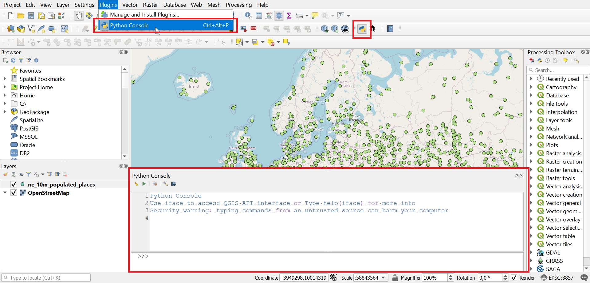
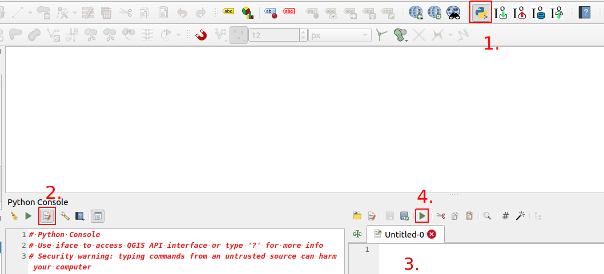

Kappale 12: Python- konsoli
Tehtävä 12.1
Tehtävässä on kolme vaihetta. Avaa QGISin Python konsoli.
 Aineistot:
valtiot.gpkghallintoalueet.gpkg
Vaihe 1: Lisää valtiot.gpkg- aineisto QGISiin ja valitse taso. Kokeile ensin peruskomentoja konsolissa:
layer = iface.activeLayer()print(layer)print(layer.featureCount())Mitä komennot tekevät?
layer = iface.activeLayer()
Tallentaa layer- muuttujaan sen taso- olion, joka on klikattu aktiiviseksi QGISin tasot- paneelissa.
print(layer)
Tulostaa konsoliin layer- olion tiedot.
print(layer.featureCount())
Laskee tason kohteiden määrän featureCount()- funktiolla ja tulostaa sen.
Vaihe 2: Käy for- silmukassa läpi “valtiot”- tason kohteet ja tulosta kohteen nimi (ADMIN- kenttä).
- Tallenna valtiot- taso muuttujaan joko activeLayer()- funktiolla kuten äsken. Voit myös hakea tason nimen perusteella seuraavasti:
layer = QgsProject.instance().mapLayersByName('tason_nimi')[0]- Kirjoita for- silmukka. Taso- olion getFeatures()- funktio (tai tarkemmin sanottuna metodi) palauttaa iteraattori- olion jota voi käyttää suoraan silmukassa:
for feature in layer.getFeatures():
print(feature) # Tämä tulostaa kohde- olion tiedot.
# Miten saat tulostettua "ADMIN"- kentän arvon?- Pythonin hyödyntämistä on dokumentoitu QGISin sivuilla. Dokumentaatiosta löytyy QGISin eri luokkien tietoja esimerkiksi niiden metodeista. Yllä olevassa esimerkissä for- silmukan sisällä ‘feature’- muuttujassa on sillä hetkellä läpi käytävä
QgsFeature- olio. Millä funktiolla tai menetelmällä saat palautettua tietyn kentän arvon kohteesta? Lue dokumentaatiota täältä.
layer = QgsProject.instance().mapLayersByName('valtiot')[0]for feature in layer.getFeatures():
print(feature["ADMIN"])Vaihe 3: Tarkastele seuraavaa skriptiä. Pohdi mitä skripti tekee sen eri vaiheissa.
from qgis.core import *
from qgis.gui import *
source_layer = QgsProject.instance().mapLayersByName('hallintoalueet')[0]
new_layer = QgsVectorLayer('Polygon?crs=epsg:3067', 'hanko_vyohyke', 'memory')
prov = new_layer.dataProvider()
prov.addAttributes([QgsField("nimi", QVariant.String)])
new_layer.updateFields()
hanko_feature = source_layer.getFeature(1)
hanko_geometry = hanko_feature.geometry()
buffered_geometry = hanko_geometry.buffer(5 * 1000, 5)
new_feature = QgsFeature()
new_feature.setAttributes(["Hanko"])
new_feature.setGeometry(buffered_geometry)
prov.addFeatures([new_feature])
new_layer.updateExtents()
QgsProject.instance().addMapLayer(new_layer)Skripti hakee hallintoalueet- tasosta Hanko- kohteen ja luo sen geometriasta 5 km vyöhykkeen. Vyöhyke lisätään uudelle väliaikaiselle hanko_vyohyke tasolle.
Lisätietoa data provider- luokasta: https://qgis.org/pyqgis/3.2/core/Data/QgsDataProvider.html
Voit ajaa skriptin seuraavasti:

- Avaa Python- konsoli.
- Avaa Python- skriptieditori.
- Kopioi skripti editoriin.
- Aja skripti.
# Tuodaan tarvittavat QGIS-paketit
from qgis.core import *
from qgis.gui import *
# Haetaan hallintoalueet-taso
source_layer = QgsProject.instance().mapLayersByName('hallintoalueet')[0]
# Luodaan uusi väliaikainen vektoritaso "suomi_vyohyke", jonka koordinaattijärjestelmä on EPSG:3067
new_layer = QgsVectorLayer('Polygon?crs=epsg:3067', 'hanko_vyohyke', 'memory')
# Tallennetaan tason data provider
prov = new_layer.dataProvider()
# Lisätään attribuuttikenttä ("nimi") uuden tason ominaisuustietoihin
prov.addAttributes([QgsField("nimi", QVariant.String)])
new_layer.updateFields()
# Haetaan Hanko- kohde hallintoaluetasolta
hanko_feature = source_layer.getFeature(1)
# Haetaan Hanko- kohteen geometria
hanko_geometry = hanko_feature.geometry()
# Luodaan puskurigeometria viiden kilometrin etäisyydellä ja viidellä segmentilla
buffered_geometry = hanko_geometry.buffer(5 * 1000, 5)
# Luodaan uusi kohde
new_feature = QgsFeature()
new_feature.setAttributes(["Hanko"]) # Asetetaan kohteelle nimi- attribuutti
new_feature.setGeometry(buffered_geometry) # Asetetaan kohteelle vyöhykegeometria
# Lisätään uusi ominaisuus data provideriin
prov.addFeatures([new_feature])
# Päivitetään tason ominaisuustiedot
new_layer.updateExtents()
# Lisätään uusi vektoritaso QGIS-projektiin
QgsProject.instance().addMapLayer(new_layer)Tehtävä 12.2
Tutki alla olevaa skriptipohjaa. Selvitä itsellesi, mitä skriptillä pyritään saamaan aikaan. Avaa QGISin python- editori ja kopioi skriptipohja siihen. Tallenna skripti tietokoneellesi esimerkiksi natura_skripti.py- tiedostoon. Tee skriptiin numeroituina kommentteina tallennetut muokkauspyynnöt (10 kpl) ja testaa toimiiko skripti.
from qgis.core import *
from qgis.gui import *
layera = QgsProject.instance().mapLayersByName('natura_alueet')[0]
## 1. Luo layerb muuttuja, joka viittaa kunta-nimiseen karttatasoon
layerb =
# Luodaan uusi taso ja määritetään sen geometriatyyppi
layer = QgsVectorLayer('Polygon?crs=epsg:3067', 'tulostaso' , 'memory')
# Asetetaan provider hyväksymään datalähde
prov = layer.dataProvider()
# Luodaan attribuuttikentät
## 2. Lisää kolmas attribuutti, nimeltään area_dif ja tyypiltään Double
prov.addAttributes([QgsField("id", QVariant.Int), QgsField("name", QVariant.String)])
layer.updateFields()
## HUOM. Arvoksi pitäisi tulla ajettaessa 3
print("Ominaisuustietosarakkeita yhteensä:")
print(len(layer.fields()))
# Alustetaan muuttujat ennen silmukkaa
laskuri = 0
tempsum = 0
# Käy kaikki layera- tason kohteet (a- muuttuja viittaa sillä hetkellä käsiteltävään kohteeseen)
# Sisennettyt rivit ajetaan joka kierroksella
for a in layera.getFeatures():
# Haetaan kohteen a geometria
kpl = a.geometry()
# Käy kaikki layerb- tason kohteet (b- muuttuja viittaa sillä hetkellä käsiteltävään kohteeseen)
# Sisennettyt rivit ajetaan joka kierroksella
for b in layerb.getFeatures():
## 3. Tallenna kohteen b geometriaobjekti muuttujaan kpl2
kpl2 =
## 4. Luo ehto, jonka sisään päätyy vain jos kpl leikkaa kpl2:sta
if :
## 5. Kasvata laskuri muuttujan arvoa, joka kerta, kun kpl leikkaa kpl2:sta
laskuri =
# Tallennetaan päälle menevä osa geometriana
geomleik = kpl.intersection(kpl2)
## 6. Tallenna geomhu-nimiseen muuttujaan geomleik objektin konveksi peite (convex hull)
geomhu =
## 7. Laske, kuinka paljon isompi konveksin peitteen pinta-ala on verrattuna geomleik ja tallenna se muuttujaan temp
temp =
## 8. Pidä yllä tietoa siitä, kuinka paljon uutta pinta-alaa on syntynyt tähän mennessä konveksien peitteiden luonnista
tempsum =
# Luodaan uusi kohde
feat = QgsFeature()
## 9. Muokkaa siten, että ao. käsky asettaa myös area_dif attribuuttikentän arvoksi temp muuttujan sisältämä arvo
feat.setAttributes([laskuri, a['Nimi']])
# Määritetään geometria uudelle kohteelle
## 10. Lisää sen muuttujan nimi (sulkeiden sisään), josta geometriatieto tulee hakea, jotta uuden tason kohteiden
## geometriat tulevat vastaamaan leikkaavien polygonien konvekseja peitteitä
feat.setGeometry()
# Lisätään kohde uudelle tasolla
prov.addFeatures([feat])
# Päivitetään tason laajuus
layer.updateExtents()
print("Konveksin peitteen luomisesta seurasi")
# Muunnetaan neliömetrit neliökilometreiksi
print(round((tempsum / 1000000.0), 1))
print("km2 pinta-alan lisäys.")
# Lisätään uusi taso tasot- paneeliin
QgsProject.instance().addMapLayers([layer])Aineistot:
natura_alueet.gpkghallintoalueet.gpkgHUOM! Valitse kaksi itseäsi kiinnostavaa kuntaa ja tallenna omaksi geopackageksi, jonka nimi on ‘kunta.gpkg’
Skripti:
- tarkistaa onko hallintoaluekohteen sisällä Natura-alue(ita)
- leikkaa (intersection) Natura-aluekohteen kunnan rajojen mukaisesti
- luo leikatulle Natura-aluekohteen geometrialle konveksin peitteen (Convex Hull)
- laskee kuinka paljon suurempi Convex Hull on verrattuna leikattuun kohteeseen ja tallentaa sen uuden kohteen attribuuttitauluun
- tallentaa uudet kohteet väliaikaiselle ‘tulostaso’:lle
Täydennetty skripti:
from qgis.core import *
from qgis.gui import *
layera = QgsProject.instance().mapLayersByName('natura_alueet')[0]
layerb = QgsProject.instance().mapLayersByName('kunta')[0]
# Luodaan uusi taso ja määritetään sen geometriatyyppi
layer = QgsVectorLayer('Polygon?crs=epsg:3067', 'tulostaso' , 'memory')
# Asetetaan provider hyväksymään datalähde
prov = layer.dataProvider()
# Luodaan attribuuttikentät
prov.addAttributes([QgsField("id", QVariant.Int), QgsField("name", QVariant.String), QgsField("area_dif", QVariant.Double)])
layer.updateFields()
print("Ominaisuustietosarakkeita yhteensä:")
print(len(layer.fields()))
# Alustetaan muuttujat ennen silmukkaa
laskuri = 0
tempsum = 0
# Käy kaikki layera- tason kohteet (a- muuttuja viittaa sillä hetkellä käsiteltävään kohteeseen)
# Sisennettyt rivit ajetaan joka kierroksella
for a in layera.getFeatures():
# Haetaan kohteen a geometria
kpl = a.geometry()
# Käy kaikki layerb- tason kohteet (b- muuttuja viittaa sillä hetkellä käsiteltävään kohteeseen)
# Sisennettyt rivit ajetaan joka kierroksella
for b in layerb.getFeatures():
kpl2 = b.geometry()
if kpl.intersects(kpl2):
laskuri = laskuri + 1
geomleik = kpl.intersection(kpl2)
geomhu = geomleik.convexHull()
temp = geomhu.area() - geomleik.area()
tempsum = tempsum + temp
# Luodaan uusi kohde
feat = QgsFeature()
feat.setAttributes([laskuri, a['Nimi'], temp])
# Määritetään geometria uudelle kohteelle
feat.setGeometry(geomhu)
# Lisätään kohde uudelle tasolla
prov.addFeatures([feat])
# Päivitetään tason laajuus
layer.updateExtents()
print("Konveksin peitteen luomisesta seurasi")
# Muunnetaan neliömetrit neliökilometreiksi
print(round((tempsum / 1000000.0), 1))
print("km2 pinta-alan lisäys.")
# Lisätään uusi taso tasot- paneeliin
QgsProject.instance().addMapLayers([layer])